Christian Art: English
Old Testament
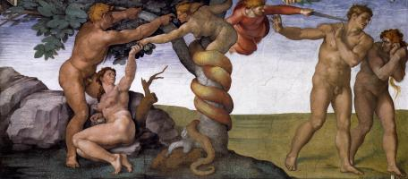
Adam & Eve (4)
Adam & Eve (4)
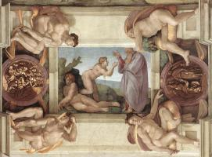
Creation of the World (5)
Creation of the World (5)
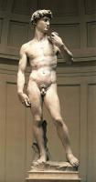
David (3)
David (3)
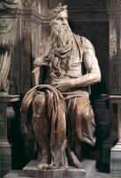
Moses (1)
Moses (1)
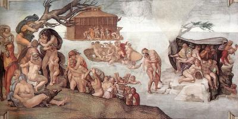
Noah (3)
Noah (3)
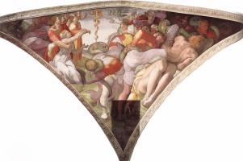
Scenes from the Old Testament (4)
Scenes from the Old Testament (4)
New Testament
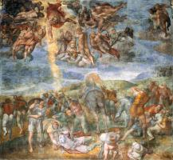
Apostle Paul (3)
Apostle Paul (3)
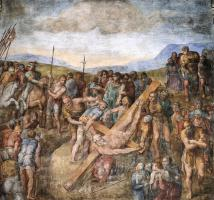
Apostle Peter (6)
Apostle Peter (6)

God the Father (1)
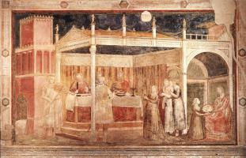
John the Baptist (7)
John the Baptist (7)

Last Judgment (5)
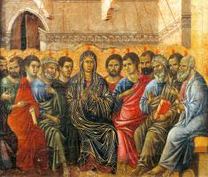
Pentecost (4)
Pentecost (4)
Virgin Mary
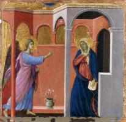
Annunciation (13)
Annunciation (13)
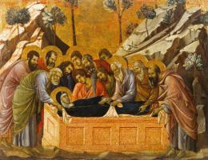
Assumption (11)
Assumption (11)
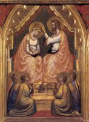
Coronation of the Virgin (5)
Coronation of the Virgin (5)

Flight into Egypt (8)

Portrait of the Virgin (1)
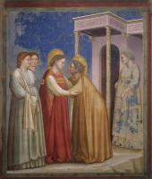
Scenes from the life of the Virgin (11)
Scenes from the life of the Virgin (11)

Virgin & Child (58)

Virgin’s parents (7)
Jesus Christ
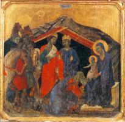
Adoration to Child (10)
Adoration to Child (10)

Ascension (3)
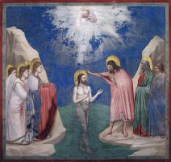
Baptism of Jesus (1)
Baptism of Jesus (1)
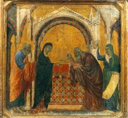
Candlemas (6)
Candlemas (6)
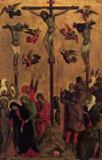
Crucifixion (24)
Crucifixion (24)
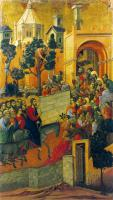
Entry into Jerusalem (2)
Entry into Jerusalem (2)

Jesus portrait (10)
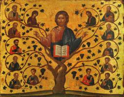
Jesus’ parables (3)
Jesus’ parables (3)

Lamentation over Christ (13)
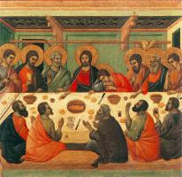
Last Supper (5)
Last Supper (5)
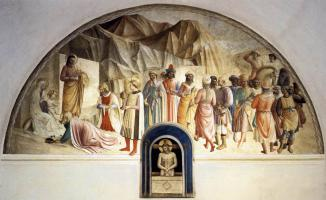
Man of Sorrows (2)
Man of Sorrows (2)
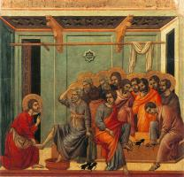
Ministry of Jesus (17)
Ministry of Jesus (17)
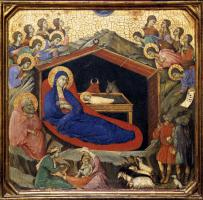
Nativity (4)
Nativity (4)
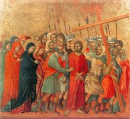
Passion of the Christ (22)
Passion of the Christ (22)

Resurrection (15)
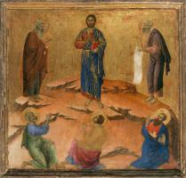
Transfiguration (2)
Transfiguration (2)
Christianity
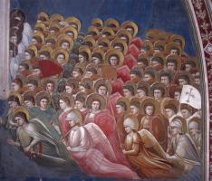
Angels (10)
Angels (10)
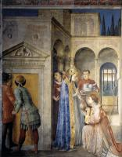
Church (2)
Church (2)
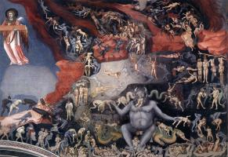
Hell (2)
Hell (2)
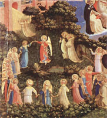
Paradise (1)
Paradise (1)
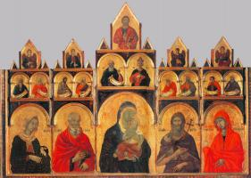
Saints (87)
Saints (87)
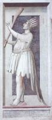
Vices (8)
Vices (8)
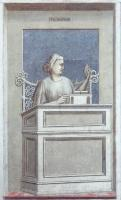
Virtues (8)
Virtues (8)
Artists
A
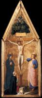
Fra Angelico (145)
Fra Angelico (145)
D
G
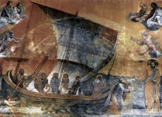
Giotto (162)
Giotto (162)
M
Michelangelo (36)
R
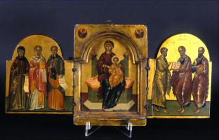
Andreas Ritzos (9)
Andreas Ritzos (9)